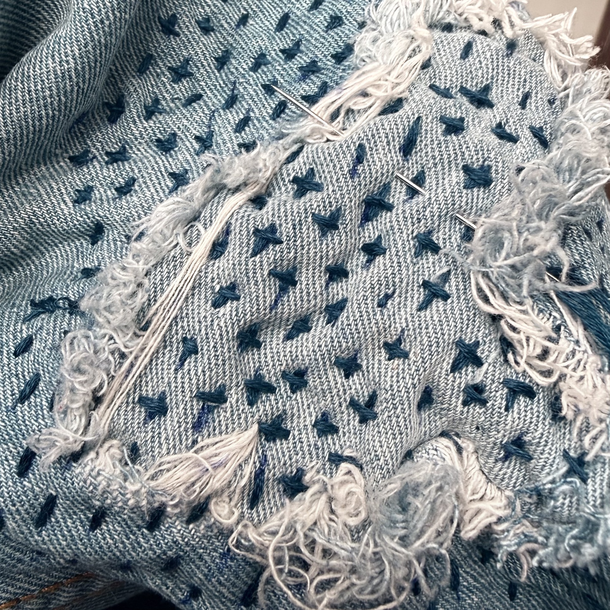
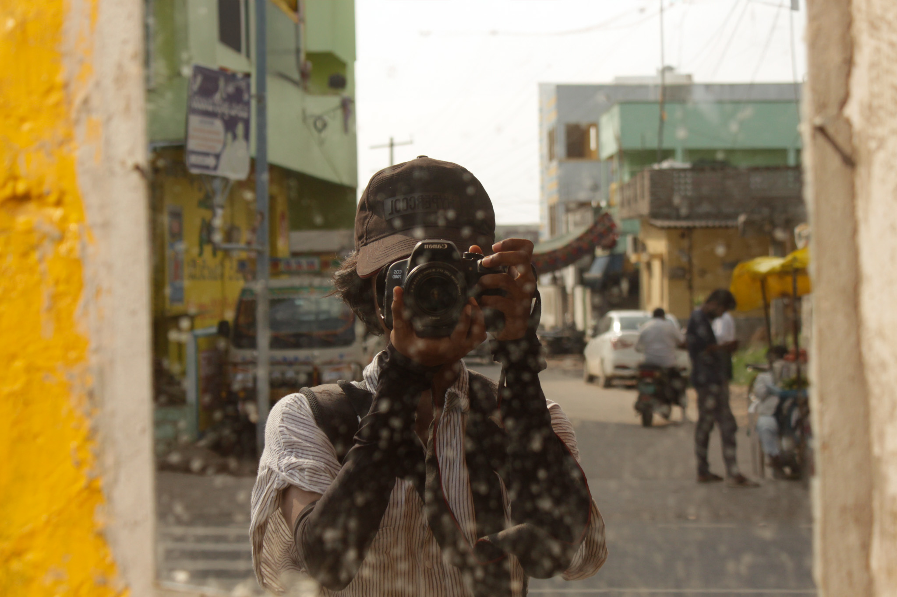

Woven
Matka Woven Design
Woven Design Project
An exploration of structure and texture through handloom weaving — investigating how pattern and material choice can transform a simple grid into a surface with depth and narrative.
view project
Blue Damsel
Advanced Weaving
A deeper investigation into complex weave structures — exploring double weave, supplementary weft, and the interplay of colour across the loom.
view project
Scarlet & Sage
Basic Weaving
Foundation studies in plain weave, twill, and satin — exploring how threading order creates radically different visual and tactile outcomes from the same yarn.
view project
Surface Development
Blue Damsel
Fabric Construction
Exploring non-woven and unconventional fabric-making — from felting and bonding to layering and manipulation. Each sample questions what fabric can be beyond the loom.
view project
Embroidery
Surface Development
Hand embroidery as a slow, meditative surface practice — exploring stitch as drawing, building texture, density, and pattern one thread at a time.
view project
Narrative
Photography
Narrative
A photographic series documenting material, craft, and the human relationship with making — finding the extraordinary in everyday textile processes.
view project
Communication Graphics
Narrative
Graphic design work developed alongside textile practice — posters, type studies, and visual communication informed by a material-led sensibility.
view project